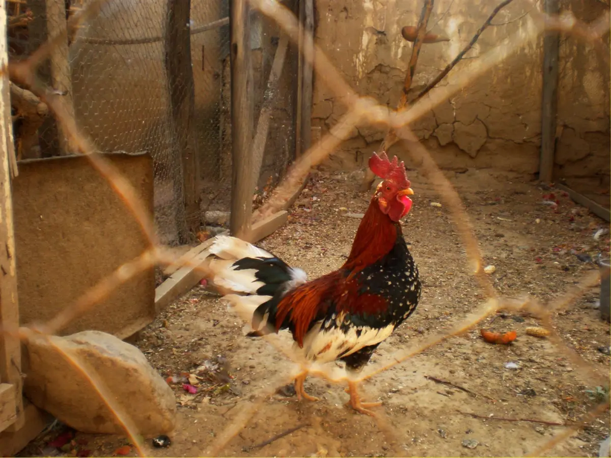

Guide · Vinter
Höns på vintern — komplett guide för svenska förhållanden

Guide · Vinter

Höns klarar kyla bra. Problemet är fukt, drag och frysande vatten. Här är vad du behöver veta.
De flesta hönsraser klarar temperaturer ner till -15 till -20°C utan problem, förutsatt att hönshuset är dragfritt, torrt och välventilerat. Köldtåliga raser som Hedemora (svensk lantras med fjädrar på benen), Orpington, Sussex och Brahma klarar ännu kallare.
Den verkliga fienden är inte kylan — det är fukt. En fuktig miljö gör att hönsens fjäderdräkt tappar sin isolerande förmåga, och då kan de få frostskador på kam och skänklar även vid måttlig minusgrad.
Innan den första frosten kommer (vanligen oktober-november i Sverige) bör du gå igenom hönshuset:
Instinkten säger: det är kallt, stäng allt. Det är fel. Höns andas ut enorma mängder fukt, och utan ventilation samlas den fukten i luften och sätter sig som rimfrost på väggarna på morgonen.
Regeln är enkel: stäng drag, inte ventilation. Drag är horisontell luftström som blåser direkt på hönsen. Ventilation är luftutbyte i taket. Du behöver det senare, inte det förra.
En bra tumregel: hönshuset ska ha en ventilationsöppning motsvarande cirka 2% av golvytan, helst i takhöjd (där den varma fuktiga luften samlas).
Det här är vinterns största huvudvärk. Höns dricker ungefär 250-300 ml per dag och behöver alltid tillgång till färskt vatten — även när det är -10°C ute.
Höns äter cirka 20-30% mer på vintern eftersom de förbränner extra kalorier för att hålla värmen. Byt inte foder — bara ge mer. Ett bra trick är att servera varmt havregrynsgröt på morgonen de kallaste dagarna. Det höjer kroppstemperaturen och hönsen älskar det.
Undvik att slänga kalla rester direkt från kylen i hönsgården — värm dem först till rumstemperatur.
Hönsens värpning styrs av dagsljuslängd. De behöver minst 14 timmar ljus för att värpa regelbundet. I Sverige innebär det att produktionen naturligt minskar från oktober till februari — vissa höns slutar värpa helt.
Vill du hålla igång värpningen kan du installera en enkel LED-lampa (2-3W räcker) på en timer som startar 05:00 och släcker när det blir ljust ute. Men tänk på att det också sliter mer på hönorna — de behöver en naturlig viloperiod på vintern.
Det smartaste köpet du kan göra innan första snön: en automatisk lucköppnare. Du slipper gå ut i -10°C klockan 6 på morgonen för att släppa ut hönsen, och du slipper riskera att glömma stänga på kvällen när räven är som mest aktiv.
Ja — de flesta hönsraser klarar temperaturer ner till -15 till -20°C utan problem om hönshuset är dragfritt, torrt och välventilerat. Köldtåliga raser som Hedemora, Orpington och Sussex klarar ännu kallare.
Nej, i de flesta fall behövs ingen tillskottsvärme. Höns producerar egen kroppsvärme och tål kyla bättre än fukt. Värmelampa ökar brandrisken och kan faktiskt göra hönsen mer känsliga för kyla genom att de inte acklimatiserar sig naturligt.
Bäst är en frostfri vattenautomat med värmeelement (drar 20-40W). Alternativt: byt vatten 2-3 gånger per dag, använd en svart hink i sol, eller lägg en tennisboll i vattnet som rör sig med vinden.
Värpningen minskar naturligt på grund av kortare dagar. Höns behöver 14+ timmar dagsljus för regelbunden värpning. Vissa lägger till belysning (LED, 2-3W) i hönshuset för att hålla igång produktionen.
Det är ovanligt om hönshuset är torrt och dragfritt. Det som faktiskt kan hända är frostskador på kam och skänklar, särskilt hos raser med stora enkla kammar. Använda vaselin på kammen kalla kvällar om du är orolig.
Båda. Höns ska alltid kunna välja. De flesta går gärna ut även i snö, men vill ha tillgång till hönshuset som skydd. Undvik att stänga in dem — de behöver röra sig.
Relaterat: Läs också vår jämförelse av automatiska lucköppnare för att se vilka modeller som klarar svenska vintrar bäst.